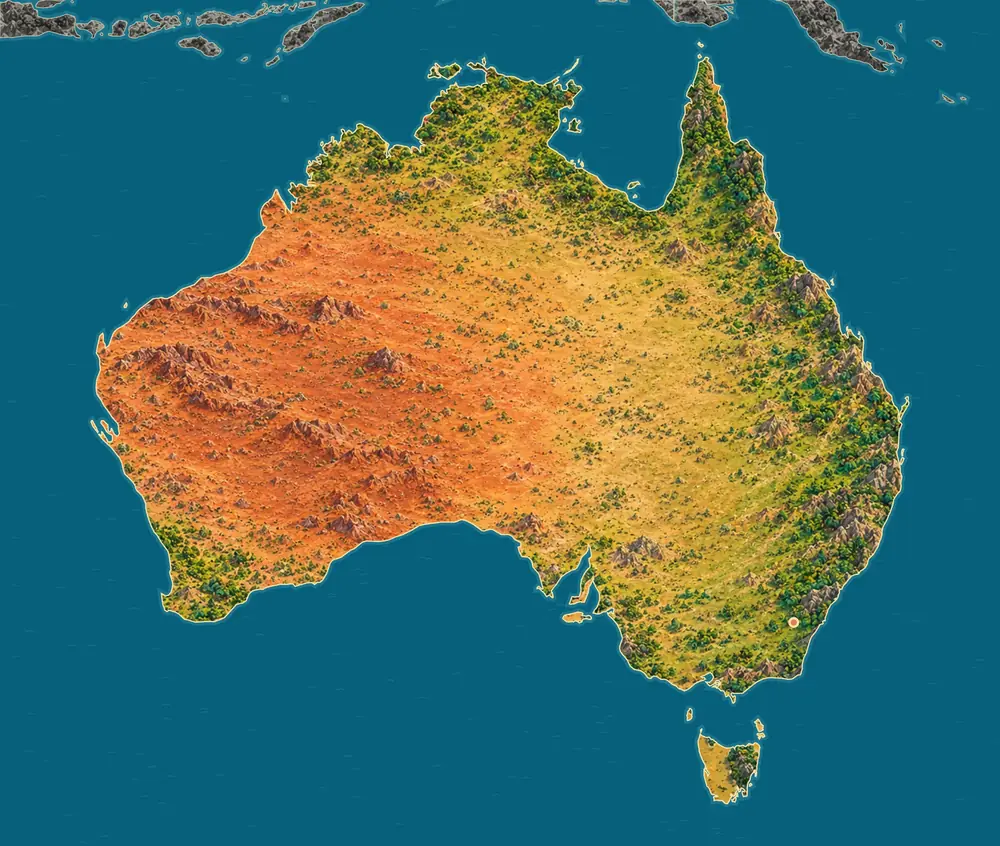
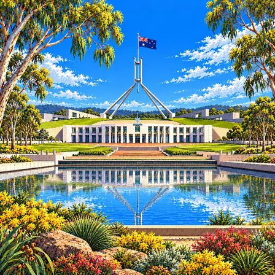
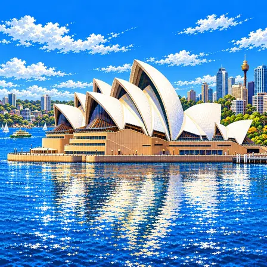
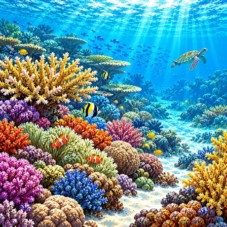
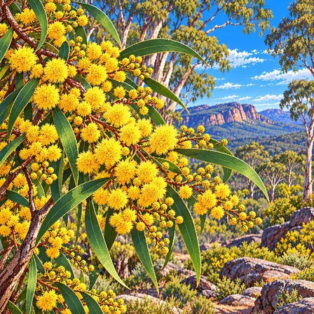
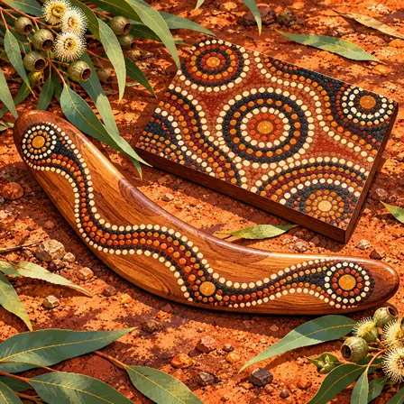
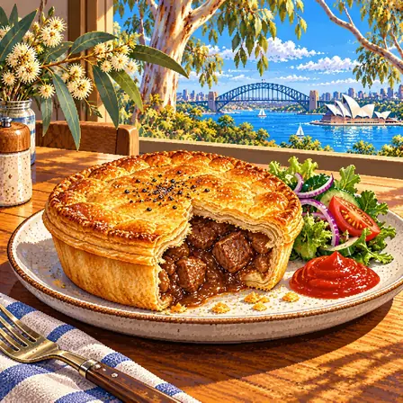
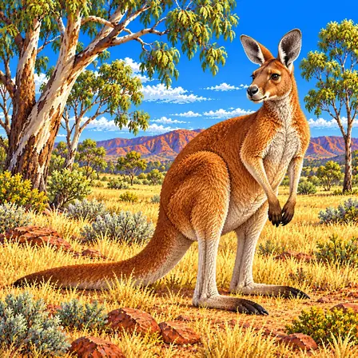
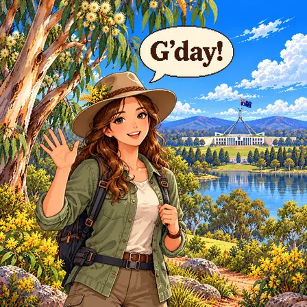
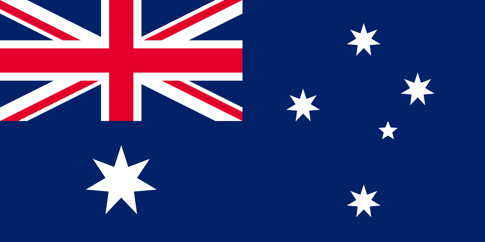

The long range in the east
The Great Dividing Range is a long chain of mountains running along the east coast. The highest mountain on the mainland is Mount Kosciuszko in the Snowy Mountains in the southeast, 2,228 m high.
World Geography Atlas › Oceania › Australasia

Australia
A vast country in the Southern Hemisphere, home to kangaroos and the Opera House.

Australia is a continent with wide deserts and lots of dry land. A long mountain chain runs along the east coast, and a huge coral reef lies in the sea to the northeast.
Mainland Australia has wide deserts and dry plains in the centre and west, and the Great Dividing Range runs along the east coast. The Great Barrier Reef lies off the northeast coast, and Shark Bay, with its wide seagrass beds, lies in the western sea.
The Great Dividing Range is a long chain of mountains running along the east coast. The highest mountain on the mainland is Mount Kosciuszko in the Snowy Mountains in the southeast, 2,228 m high.
Together, the ten named deserts cover about 18% of the mainland. The largest, the Great Victoria Desert, covers about 349,000 km², around 4.5% of the mainland.
Source: Geoscience Australia, Deserts
The Great Barrier Reef off the northeast coast has about 2,500 coral reefs of different sizes and shapes and more than 900 islands. It covers about 348,000 km² and became a UNESCO World Heritage site in 1981.
Source: UNESCO, Great Barrier Reef
Shark Bay on the west coast has seagrass beds covering about 4,800 km². They are counted as the largest and richest seagrass beds in the world.
Uluru is a huge sandstone rock 348 m high and 9.5 km around. Its sandstone layers, first laid down flat, were tipped up until they stand almost on end, so the rock shows upright stripes.
In Hamelin Pool, a very salty part of Shark Bay, stromatolites grow: rocky mounds built layer by layer by tiny living things. They look like the ones that lived in seas very long ago, so they are important for studying early life on Earth.
A city, a heritage site, nature, a plant, culture, food, an animal, a greeting and the flag of Australia, each drawn as pixel art.

Canberra is the capital of Australia. It was planned and built between the country's two biggest cities. A large lake lies in the middle of the city.
Canberra is the capital of Australia, where about 470,000 people live. After Sydney and Melbourne competed to be the capital, it was decided in 1908 to build a new capital between the two cities. In 1913 the American architect Walter Burley Griffin designed it as a garden city around Lake Burley Griffin, with radial roads and separate zones by function. It is a planned city set inland rather than on the coast, with a very high share of green space.

The Sydney Opera House is a concert hall beside the harbor. Its roofs look like giant shells or sails. Music and plays are performed there.
The Sydney Opera House is a performing-arts center in Sydney Harbour. The Danish architect Jørn Utzon won the design contest in 1957. To build its large shell-shaped roofs, a clever solution was found: every roof piece is cut from the surface of one big sphere, and it was completed in 1973. Utzon stepped down before it was finished after disagreements with the client. Thirty-four years after completion, in 2007, it was listed as a UNESCO World Cultural Heritage site.

The Great Barrier Reef is the biggest coral reef in the world. It is made of more than 2,900 separate reefs. Colorful fish and sea turtles live there.
The Great Barrier Reef is the world's largest coral reef area, in the sea northeast of Queensland, Australia. Coral began building it up about 500,000 years ago, and its present structure was made after the sea level rose about 8,000 years ago. It is made of more than 2,900 coral reefs and 900 islands, and is home to more than 1,500 kinds of fish and 6 kinds of sea turtle. It is the largest structure on Earth made of living things, but coral bleaching from rising sea temperatures is serious.

The golden wattle is a tree covered in round, fluffy yellow flowers. It is Australia's floral emblem. September 1 is Wattle Day, which celebrates it.
The golden wattle is Australia's official floral emblem. A kind of acacia, it blooms with small, round yellow flowers clustered together. It grows all across Australia, and September 1 each year is National Wattle Day. Green and gold are also the colors that stand for Australia. Indigenous people have long used its seeds, bark, and sap as food and medicine.

A boomerang is a curved wooden tool used by Australia's Aboriginal people. Some boomerangs come back when you throw them. Aboriginal artists also tell stories with paintings made of dots.
The boomerang is a bent wooden tool that Australia's Indigenous people (Aboriginal people) have used for hunting and ceremonies. The oldest boomerang found in Australia is known to be about 10,000 years old. Depending on the type, some come back when thrown and some fly far in a straight line. Dot art is Indigenous painting made by placing dots, telling stories like the desert land, waterholes, and animal tracks with dots and circles. Red, yellow, white, and black, taken from ochre earth, are the main colors used.

A meat pie is a crispy pastry filled with meat and gravy. It is the size of your palm, so you can eat it with one hand. People squirt tomato sauce on top.
The meat pie is a famous Australian snack, baked with beef and rich gravy in a crisp pie crust. Pie culture that came from Britain grew in Australia into a small size held in one hand. Split open a palm-sized pie and it is full of slow-cooked meat inside. Topping it with tomato sauce is the Australian way. Australians love eating meat pies, and the pie eaten at football stadiums has become a culture of its own.

The kangaroo raises its baby in a pouch on its belly. Its big back legs can jump more than 8 m at once. Australia has more kangaroos than people.
The kangaroo is a marsupial that raises its young in a pouch on its belly. A newborn is as small as a jelly bean and crawls up into the pouch by itself, growing inside it for several months. With its big hind legs it leaps more than 8 m at once and runs at 60 km/h, balancing with its thick tail. It lives on Australia's dry grasslands and eats grass, resting in the shade during the hot day and moving about around sunset. With tens of millions across Australia, there are more kangaroos than people, and it is even drawn on the country's national emblem.

G'day is the Australian way of saying "good day." To a friend, people say "G'day, mate!" Australians love shortening words, like calling breakfast "brekkie."
"G'day" is read "g-die," an Australian English greeting. Short for "Good day," it can be used morning, noon, or night. Adding "mate," meaning friend, to make "G'day, mate!" makes it an even more Australian greeting. Australian English has a habit of shortening words, so breakfast is "brekkie" and afternoon is "arvo." More than formality, speaking comfortably and warmly to everyone is the Australian way of manners.

Australia's flag has the Union Jack and six stars on a blue background. Five of the stars form the Southern Cross. That constellation can be seen only in the southern sky.
Australia's flag has the Union Jack and six stars on a blue field. The Union Jack at the upper left shows the history tied to Britain. The five stars on the right are the Southern Cross, a group of stars seen in the sky of the Southern Hemisphere, showing that Australia is a country of the Southern Hemisphere. The big star at the lower left is the "Commonwealth Star," whose seven points stand for the six states and the remaining territories. In 1901, as several regions formed one federation, the design was chosen through a contest.